Bitácora de Laboratorio
Santino Awada · Alumno · 5to Año · 2026
Diagnóstico de Componentes (PC Awada)
Ver Ficha Técnica Completa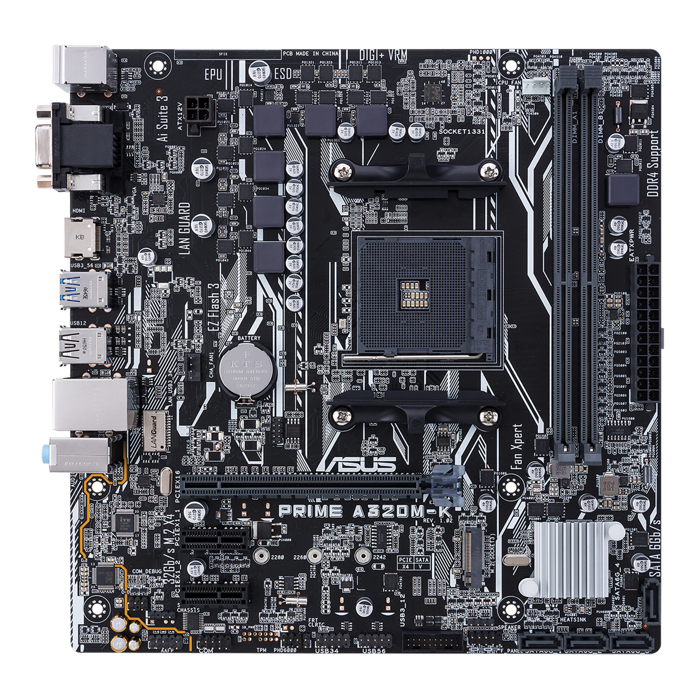
Placa Madre
Modelo: ASUS A320M-K PRIME
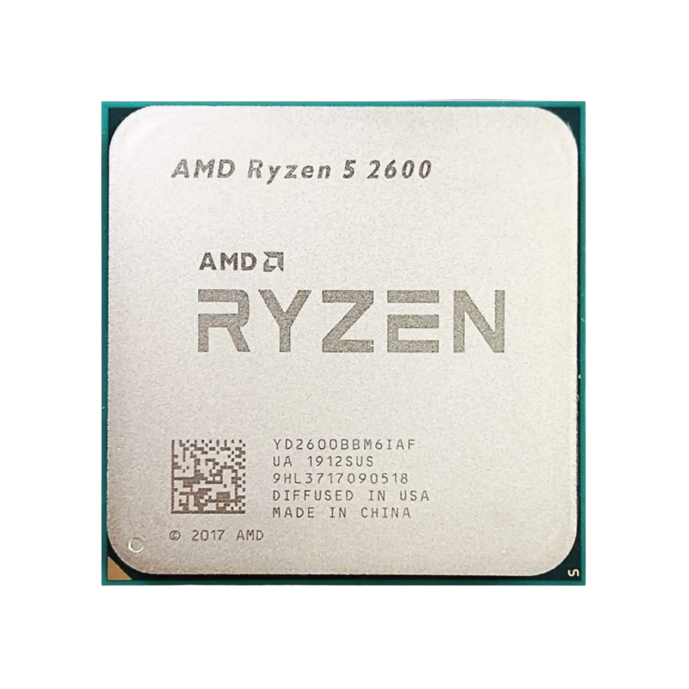
Microprocesador
Modelo: Intel(R) AMD Ryzen 5 2600 @ 3.40 GHz
Arquitectura: 64 bits, x86 y x64
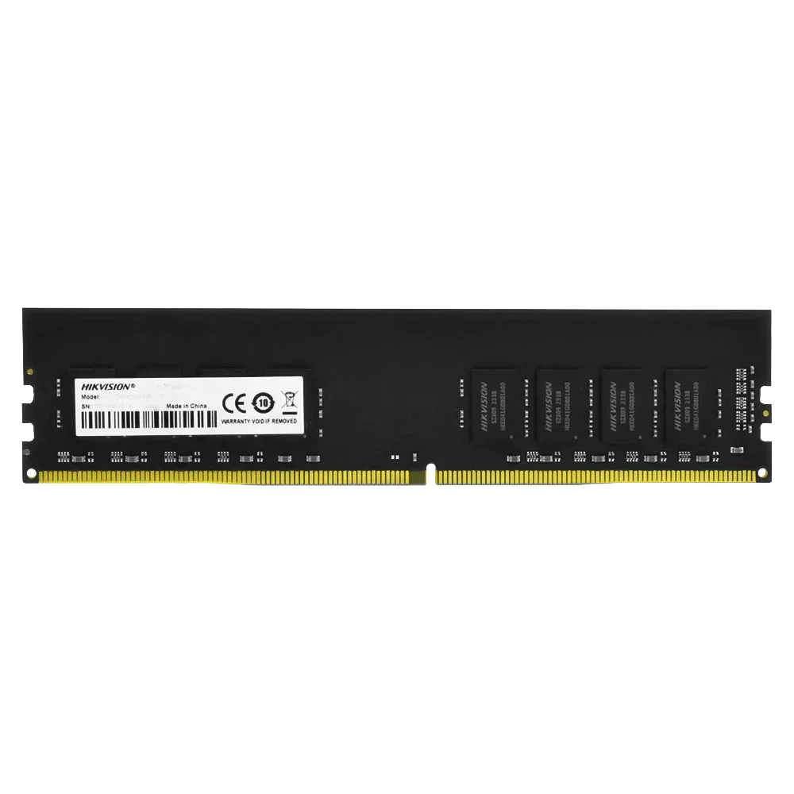
Memoria RAM
Capacidad: 16.0 GB instalada (15.8 GB utilizable)
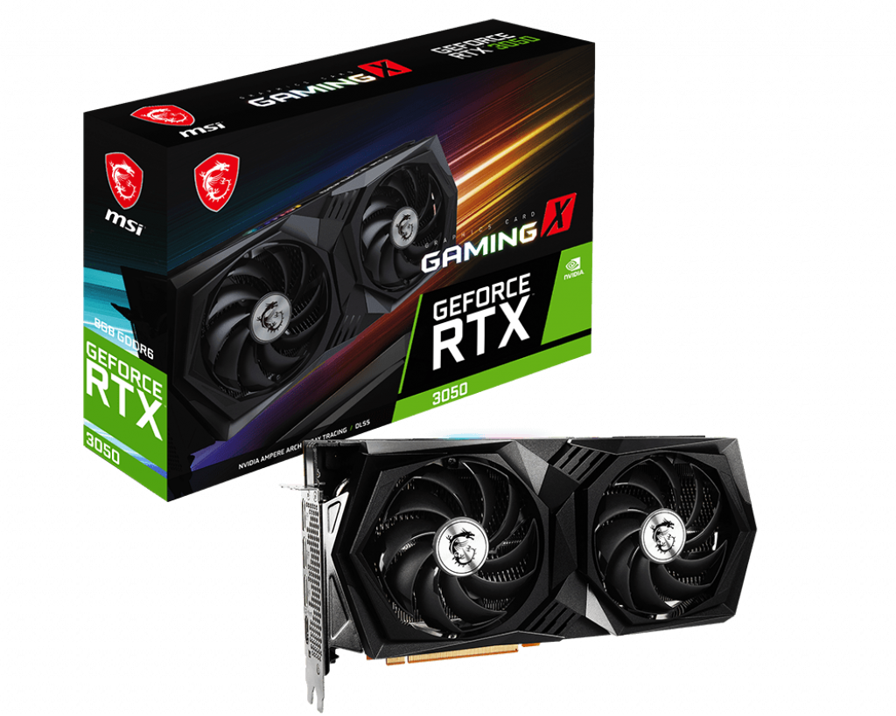
Tarjeta Gráfica (GPU)
Modelo: RTX 3050 MSI 6GB
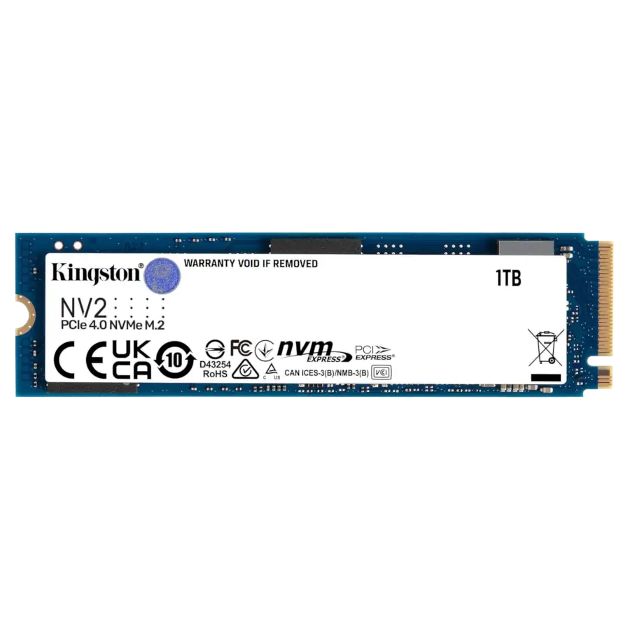
Almacenamiento
Tipo: SSD NVMe M.2
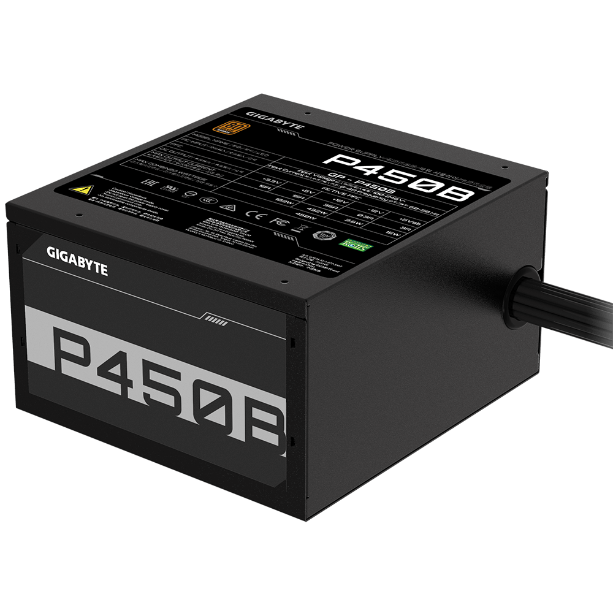
Fuente de Alimentación (PSU)
Potencia: 450W
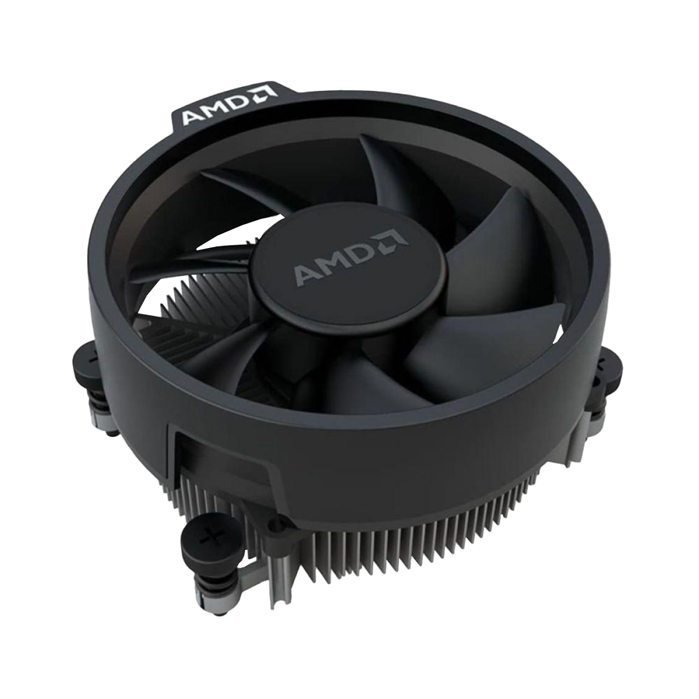
Sistema de Refrigeración
Tipo: Disipador por aire
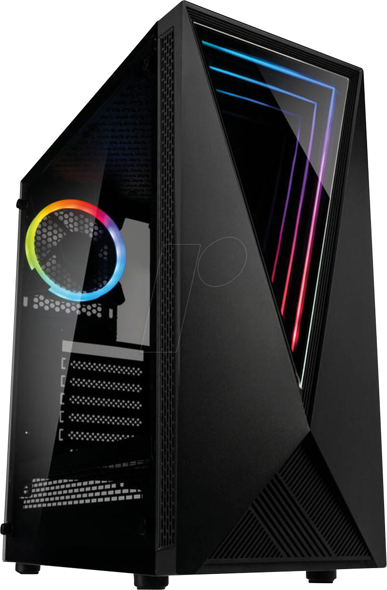
Gabinete Kolink Void
Formato: Mid Tower ATX
Periféricos y Dispositivos E/S
Interfaces físicas de comunicación con el usuario.
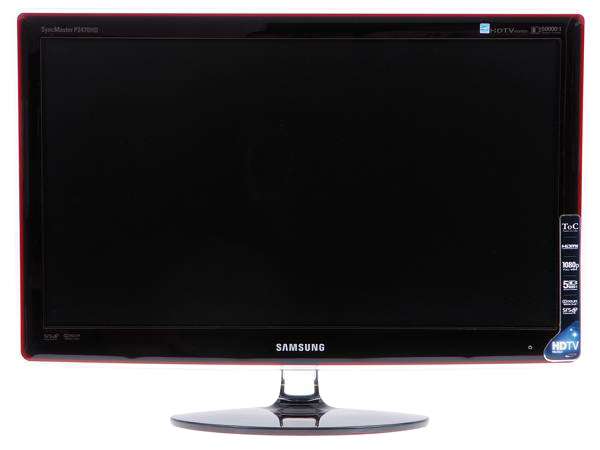
Monitor (Salida)
Resolución: 1920x1080 (Full HD) a 60Hz
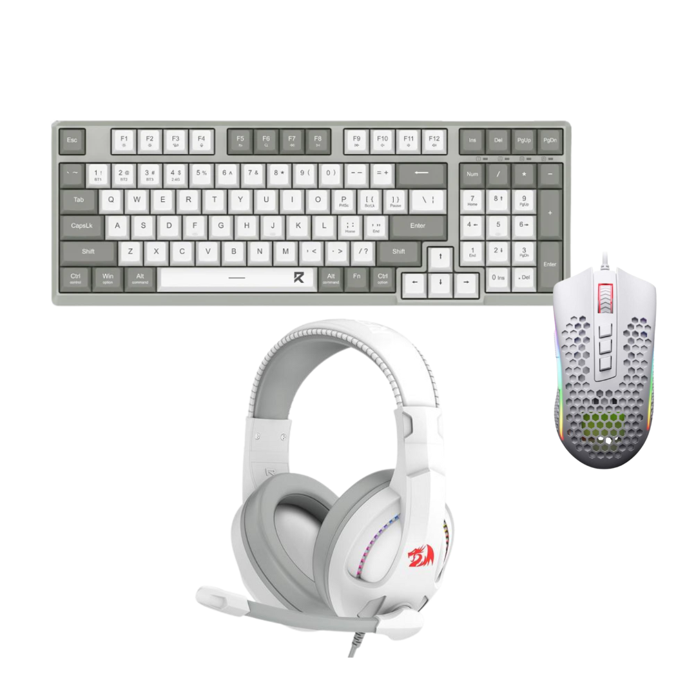
Teclado y Mouse (Entrada)
Conectividad: USB
Aclaracion: Los auriculares no son los que estan en la foto, el teclado y el mouse si
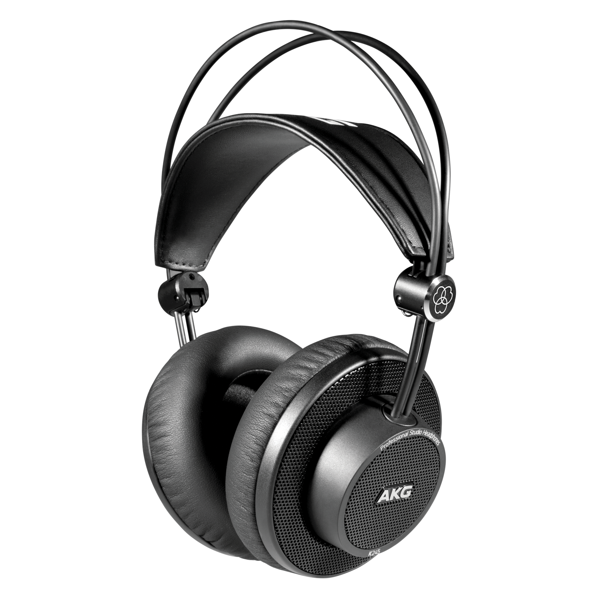
Auriculares (Salida/Entrada)
Modelo: AKG K77 Perception
Conectividad: Cableada (Jack 3.5mm)
Base de Datos de Conocimiento
Acceso al informe técnico sobre funcionamiento de componentes, arquitectura de buses y resolución de cuellos de botella (Bottlenecks).
Leer Informe Completo de Arquitectura
Armado de Equipos (Presupuestos)
Documentación técnica de presupuestos redactada bajo normas APA.
PC Gaming (Presupuesto Libre)
Enfoque en máximo rendimiento gráfico y sistemas de refrigeración avanzados.
Ver Informe APAPC Oficina (Presupuesto Limitado)
Enfoque en ofimática, durabilidad y mejor relación costo-beneficio.
Ver Informe APAMantenimiento y Laboratorio
Ficha Técnica Final
Mantenimiento preventivo y correctivo de una PC funcional del laboratorio.
Ver Ficha Técnica Final
Soldadura y Desoldadura
Recuperación de componentes electrónicos y reparación de pistas en placas de descarte.
Proyectos Arduino e IoT
Aplicación práctica de programación en C++ y electrónica para resolver problemas del mundo real.

Lentes Asistenciales
Hardware: Microcontrolador ESP32, Sensor Ultrasónico, Buzzer.
Lógica: Detección de proximidad y emisión de alertas sonoras.
Ver Código y Circuito
Basurero Inteligente
Hardware: Placa Arduino, Servomotor, Sensor de Proximidad.
Lógica: Apertura automática del contenedor mediante detección de movimiento.
Ver Código y Circuito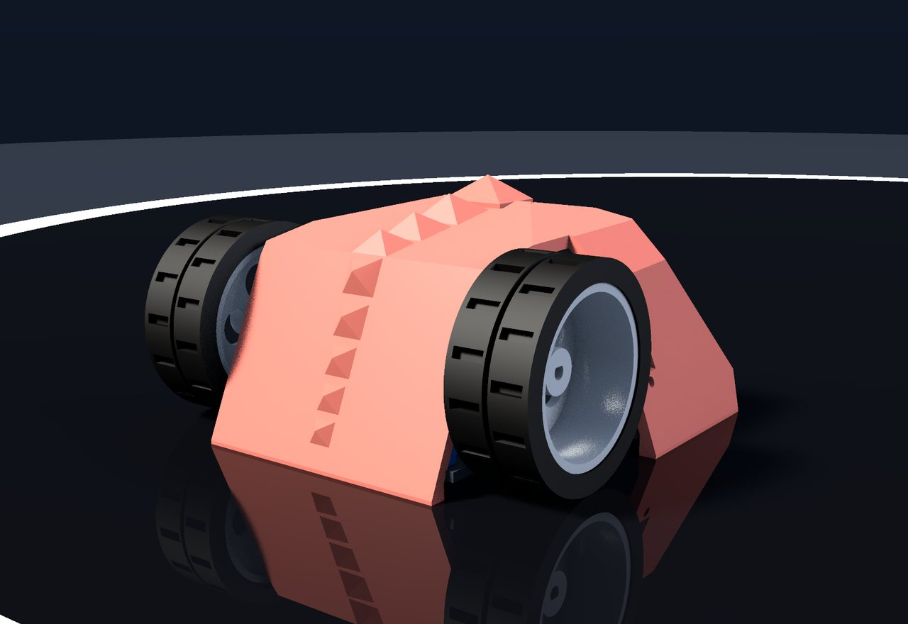
Robot Minisumo "Cybertruck"
Hardware: ESP32, Driver TB6612FNG, 2 Motores N20, Sharp + VL53L0X, 3 sensores TCRT5000.
Lógica: Busca al rival, lo empuja fuera del ring y esquiva el borde blanco, 1000 veces por segundo.